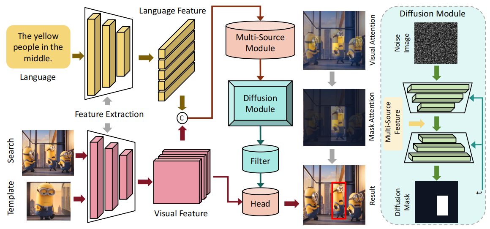
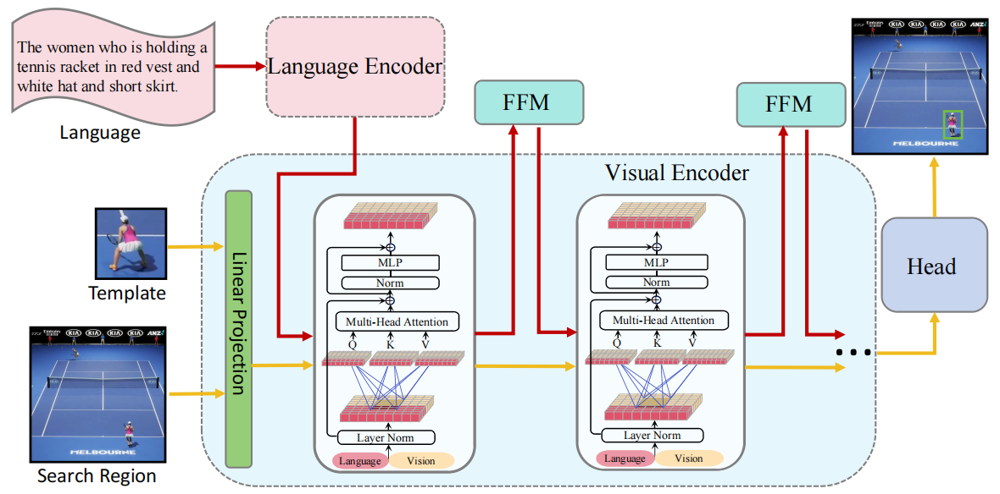
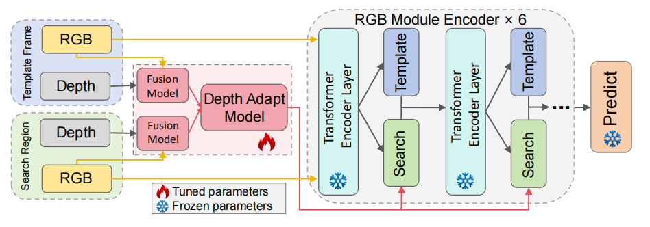
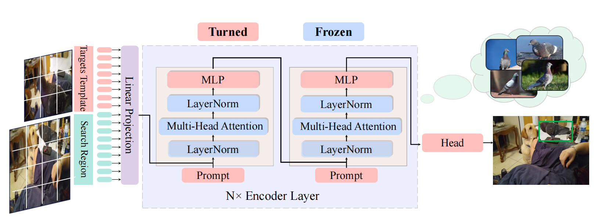

About（关于我）
Recents News（近期新闻）
- 成功获批国家自然科学基金委青年基金（青C）项目资助，项目编号：6250075249，项目起止时间：2026.1-2028.12
- 入选中国计算机协会计算机应用委员会执行委员, 推荐人：黄岚教授、白天教授
- 成功协助举办中国计算机应用大会（NCCA）的院长论坛环节.
- 拟录取进入吉林大学攻读计算机应用技术博士学位，导师为白天教授
- 担任吉林工程技术师范学院计算机科学与技术教研室主任
Experiences（个人经历）
 Mar, 2025 - Now
Mar, 2025 - Now
Publications (论文出版) [ / ]

Diffusion Mask-Driven Visual-language Tracking
IJCAI 2024 (CCF-A)

One-stream stepwise decreasing for vision-language tracking
IEEE CSVT 2024 (CCF-B, SCI Q1 TOP)

Visual adapt for RGBD tracking
ICASSP 2024 Oral (CCF-B)

Robust Tracking via Unifying Pretrain-Finetuning and Visual Prompt Tuning
ACMMM Asia 2023 (CCF-C)